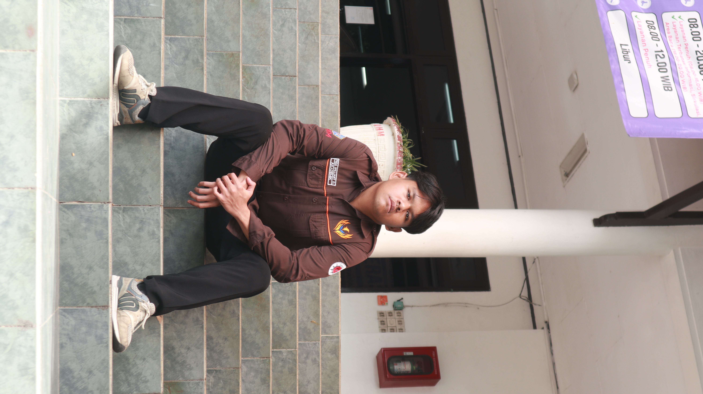

Smart Shopping List App
A shopping list system built using Java and JavaFX, applying object-oriented principles.
Tech Used: Java, JavaFX
Role: Full Stack Developer
FIGA DAFFA
Informatics Student · Software Development · Data Science
I’m Figa Daffa, an Informatics student exploring software development and data science. I learn by building, solve problems through experimentation, and believe progress comes from showing up and doing the work.

01 / PROFILE
I’m an Informatics student at Universitas Muhammadiyah Malang with interests in software development, data science, and technology-driven problem solving. Beyond coding, I’ve been involved in student organizations and event coordination—experiences that have taught me to work with people, take responsibility, and keep learning through challenges.

02 / IN PRACTICE
HMIF · Fungsionaris Himpunan
Himpunan Mahasiswa Informatika (HMIF)
Universitas Muhammadiyah Malang
Coordinated academic initiatives and contributed to the planning and development of academic programs within the student association.
Explore My Story
03 / SELECTED WORK
A shopping list system built using Java and JavaFX, applying object-oriented principles.
Tech Used: Java, JavaFX
Role: Full Stack Developer
A farm management system aimed to help local farmers record and monitor their harvest storage efficiently. The system supports transparency and traceability in the agricultural supply chain, especially for small-scale farming communities.
Tech Used: C++, File Handling (CSV)
Role: Backend Developer
A research project focused on identifying early signs of academic stress among university students through Indonesian tweets. The project utilizes NLP techniques for data crawling and preprocessing, and applies the Support Vector Machine (SVM) algorithm for classification.
Tech Used: Python, Jupyter Notebook, Snscrape, Matplotlib, Seaborn
Role: Data Collection, Preprocessing, and SVM Model Developer
04 / FIELD NOTES


05 / MAKE CONTACT
Open to meaningful collaborations, new ideas, and opportunities to learn together.
figabrilliantdafa1@gmail.com